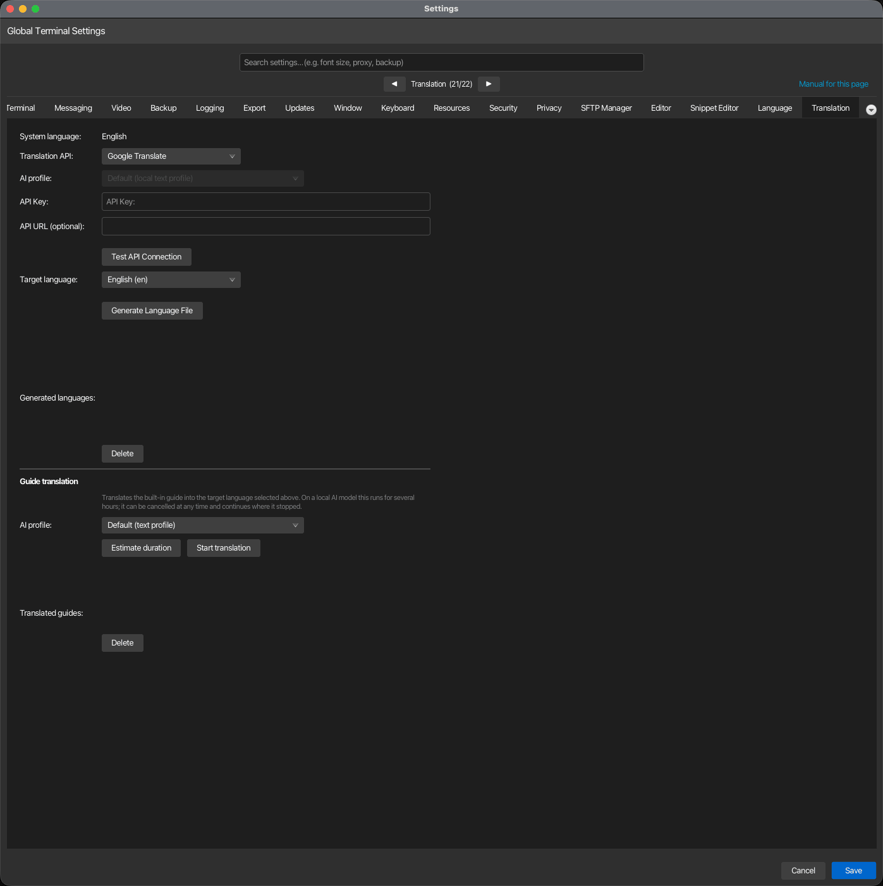

Translation¶
korTTY can translate its own interface and its built-in guide into your language. This tab holds the translation profiles (which service or AI model translates), the Translate now assistant that runs a translation with an estimate, progress and Pause, and the lists of generated language files and translated guides. Open via Configuration → Global Settings → Translation; stored in ~/.kortty/global-settings.xml.

Translation profiles¶
A profile is one way of translating: a translation API (Google Translate, DeepL, LibreTranslate, Microsoft Translator, Yandex Translate) with its key, endpoint and region, or AI translation through one of your AI profiles. You can keep several, for example a cheap API for the interface strings and a local model for the guide. Exactly one profile is the default (marked ★ in the list); it is what korTTY translates with unless the Translate now assistant is told otherwise. The section header links to this page with Open in manual.
The list sits on the left; the selected profile's editor on the right. Set up… opens the setup assistant, Add creates a profile to fill in by hand, Delete removes the selected one (the default moves to the first remaining profile).
| Field | Type | Values | Default | Stored as |
|---|---|---|---|---|
| Name | text | — | the provider's name | translationProfiles/translationProfile/name |
| Translation API | dropdown | Google Translate, DeepL, LibreTranslate, Microsoft Translator, Yandex Translate, AI translation | Google Translate | …/provider |
| API Key | password | — | — | …/encryptedApiKey (encrypted with the master password) |
| API URL (optional) | text | — | — (empty = provider default) | …/apiUrl |
| Azure region (optional) | text | — | — (Microsoft Translator only) | …/apiRegion |
| AI profile | dropdown | "Default (local text profile)" plus every AI profile | Default | …/aiProfileId (AI translation only) |
| Use as default profile | toggle | — | the first profile | defaultTranslationProfileId |
| Test API Connection | button | translates one short text with the profile | — | — |
Note
API key storage: a key you type is encrypted with your master password when you save the dialog. With the vault locked, korTTY shows a warning with an Unlock Vault… button, keeps the dialog open and leaves the key in the field; unlock and save again. A stored key is never shown; the editor says a key is stored and a new entry replaces it.
Note
Upgrading from a single provider: earlier versions stored one provider, key and URL. On first start they become a profile named after the provider (id migrated-default), which is also the default. The old fields translationApiProvider, encryptedTranslationApiKey, translationApiUrl and translationApiRegion stay in the file and always mirror the default profile, so an older korTTY still translates with the same service.
Setup assistant¶
Set up… walks through a new profile in four steps: API or AI (a translation service with a key, or one of your AI profiles), Access (the provider, its key, optional URL and Azure region, or the AI profile; a link opens the AI Manager when no AI profile exists yet), Name (with Use as default profile), and Test, which translates one short text and lets you finish, or skip the test and test later from the list. The new profile appears in the list and, when you made it the default, takes over as ★.
Translate now¶
Translate now… opens the assistant that performs a translation. Choose what to translate (Interface strings writes the language file for menus, dialogs and messages; Built-in guide translates the whole manual), the target language and the translation profile (the default is preselected).
- Estimate duration translates one real sample first: one batch of interface strings and, for the guide, one budget-sized batch of guide text. From its duration it projects the whole run and shows the result above the progress bar. The sample is a genuine translation, so a paid API charges for it; the guide sample is kept and reused by the run.
- Start runs the interface strings first and then the guide when both are selected. The dialog shows which phase runs, a progress bar, the percentage and the remaining time.
- Pause stops the run after the batch in flight (a local model can take seconds to minutes for a batch) and turns into Resume; the time spent paused is left out of the remaining-time estimate. Cancel stops at the next batch boundary: the interface strings are written in one go at the end, so a cancelled run leaves no half-translated language file, and the guide keeps its checkpoint, so the next run continues from where it stopped.
- Closing the dialog does not stop a running translation; a note next to Translate now… on the tab shows the progress, and reopening the dialog attaches to the running job again. Quitting korTTY while the guide is being translated asks whether to pause it.
The generated files appear in the two lists below the assistant: Generated languages (the interface language files under ~/.kortty/i18n/, with Delete and, for files made with an older version, Regenerate outdated) and Translated guides (the languages under ~/.kortty/guide/, with Delete, which removes the pages, assets, search index and checkpoint after a confirmation).
Provider credentials and endpoints¶
Each keyed provider expects its own kind of credential in the API Key field. The API URL field stays empty unless you deliberately point korTTY at a different host — a self-hosted LibreTranslate, a regional Azure endpoint, or a proxy.
| Provider | API version korTTY calls | What goes in API Key | Default endpoint |
|---|---|---|---|
| Google Translate | Cloud Translation v2 (Basic) | A Google Cloud API key with the Cloud Translation API enabled | https://translation.googleapis.com/language/translate/v2 |
| DeepL | DeepL API v2 | Your DeepL auth key, sent as DeepL-Auth-Key |
https://api.deepl.com/v2/translate, or https://api-free.deepl.com/v2/translate for a free key |
| LibreTranslate | LibreTranslate /translate |
Optional; required by public instances that enforce quotas | https://libretranslate.com |
| Microsoft Translator | Azure AI Translator v3.0 | The Azure Translator resource subscription key | https://api.cognitive.microsofttranslator.com |
| Yandex | Yandex Cloud Translate v2 | A Yandex Cloud service account API key, sent as Api-Key; a value starting with t1. is sent as a Bearer IAM token instead |
https://translate.api.cloud.yandex.net/translate/v2 |
Yandex: the v1.5 API is no longer usable
Yandex stopped issuing keys for the old Translate API v1.5 (translate.yandex.net/api/v1.5) and
switched off the free keys already in circulation. The host still answers, but no key you can
obtain authenticates against it. Create a service account in the Yandex Cloud console, assign it the
ai.translate.user role, issue an API key for that account, and store that key here. Leave
API URL empty: an address still pointing at the v1.5 host is ignored, and korTTY writes a
warning to the log until you clear it. The folder is implied by the service account, so nothing
else has to be configured.
Note
DeepL Free vs Pro: korTTY guesses the endpoint from the key — historically only Free keys
end in :fx — and corrects itself once if the other endpoint turns out to be the right one.
Setting API URL explicitly pins the endpoint and disables that correction.
Note
Regional Azure resources: the Azure region row appears only while Microsoft Translator
is selected, because only that provider reads it. Leave it empty for a resource created in the
Global region. A resource created in a specific region — or one with a custom domain or a
virtual network — rejects any call that does not name its region, so enter the region shown on
the resource's Keys and Endpoint page, for example germanywestcentral. A custom-domain
resource also needs its full path in API URL:
https://<resource>.cognitiveservices.azure.com/translator/text/v3.0.
AI translation¶
A profile with AI translation translates through one of your AI profiles instead of a translation API. The model must return one strict JSON translations array with the same number and order of input strings; a batch that comes back malformed is retried and split in half rather than aborting the run, and a string the model never returns in usable form keeps its English text.
The AI profile field of such a profile decides which model does the work:
- A profile you pick is always used, whatever its connection mode — an embedded llama.cpp or MLX model, a cloud endpoint such as Anthropic or an OpenAI-compatible API, or a local CLI profile. Its API key is resolved the same way the rest of the application resolves one, so the master-password vault must be unlocked when the profile needs an encrypted secret.
- Default (local text profile) uses the profile assigned to the Text/translation role in AI > AI Manager, and only if that profile runs an embedded (local) model. The default never falls back to a cloud profile automatically: this option exists for people who cannot or do not want to send their interface strings to an external service. If that role holds a cloud or CLI profile, the test and the assistant say so and ask you to pick a profile.
Warning
Credentials: translation APIs require their normal API key, except a LibreTranslate endpoint that is explicitly configured without one. AI translation requires no translation-provider key, but an embedded model needs its GGUF/MLX model and runtime installed, and the master-password vault must be unlocked when the selected AI profile needs any encrypted secret.
Guide translation¶
Translating the guide — the same site this page is part of — makes the in-app Help → Guide window and its search readable in your language rather than only the interface labels. It is started from the Translate now assistant with Built-in guide selected; the assistant's Estimate duration, progress display, Pause and Cancel apply to it. The run is independent of the interface strings: the strings take minutes, the guide can take hours on a local model.
Deleting a translated guide removes its whole directory under ~/.kortty/guide/<language>/ — the translated pages, the staged theme assets, its search index and its resume checkpoint — after a confirmation prompt.
Why this runs in the background¶
Translating the guide is not a quick action: the bundled site holds roughly 5,500 distinct pieces of text once repeated navigation and headings are deduplicated, and depending on the model this can take anywhere from a few minutes to most of a day. Starting it does not block the Settings dialog or the rest of korTTY:
- The translation keeps running after you close Settings, switch tabs, or continue working in terminals.
- A small progress indicator — a bar, a percentage and an estimated time remaining — appears at the right end of korTTY's menu bar for as long as a guide translation is in progress, and disappears again once it finishes.
- While the run is active, the Translate now assistant shows a progress bar, the percentage and the remaining time. Pause holds the run after the current batch, Cancel stops it at the next safe point rather than losing what has already been translated: progress is checkpointed to disk as it goes, so starting the same language again continues from where it left off instead of starting over.
- Closing the assistant or the Settings dialog leaves the job running; the Translation tab shows its progress next to Translate now…, and reopening the assistant attaches to it again. Start while a job runs only reports "A guide translation is already running."
- If you try to quit korTTY while a guide translation is running, a dialog offers to pause it and quit, or to keep korTTY open; choosing to pause leaves the checkpoint in place for the next run.
- After installing a korTTY update that changed the guide's content, and if you already have a translated guide for your language, korTTY offers once per run — a few seconds after the window opens, and never while a translation is already running — to bring it up to date; Update now opens this Settings tab, where you start the run yourself. Because progress is checkpointed by the exact English text of each piece, updating only re-translates sentences that actually changed in the release — everything else is reused as-is.
Why a reasoning model is a poor fit¶
Some AI models are built to "think out loud" before answering — writing an extended chain of reasoning into their reply before the actual output, a technique tuned for hard problems like math or coding. That reasoning is not part of the translation, but the model still has to generate it, and generating text is the slow part of running a local model. Measured on this project's own guide, a reasoning model produced about 4.4 completion tokens for every input token — roughly 4,400 tokens of reasoning to translate 1,000 characters of prose. On identical hardware this was the difference between a translation run of about an hour and one of six hours or more.
If the translation profile you pick for the guide is an AI profile with a reasoning model, korTTY warns you before starting or estimating, naming the model and letting you continue anyway or cancel. The check looks at the model's name (publishers of reasoning models advertise it there — "reasoning", "thinking", "R1", "QwQ", "o1" and similar are recognized), so it costs nothing to run and may occasionally miss a differently-named reasoning model, but it will not falsely warn about a plain instruct model.
Suitable models are instruction-tuned ("instruct") chat models without a reasoning/thinking mode — the kind normally used for translation, summarization or rewriting rather than multi-step problem solving. For an embedded local profile, look for MLX or GGUF builds whose name includes "instruct" and not "reasoning", "thinking" or "R1", for example a Qwen2.5-Instruct or Phi-4-mini-instruct build at a size your hardware can run comfortably (4-bit quantized 7-8B models are a practical default on Apple Silicon). Larger instruct models generally translate more fluently at the cost of speed; the duration estimate below lets you compare before committing to a full run.
Estimating how long a full translation will take¶
Estimate duration in the Translate now assistant measures the selected translation profile against a real, representative sample of the guide's text and projects how long translating everything still outstanding would take, without committing to the full run:
- It sends one small, untimed "warm-up" request first, so that a local model's one-time loading cost — which is paid once for an entire run, not per batch — is not mistaken for ongoing translation speed and multiplied across every batch of the projection.
- It then translates one real, budget-sized batch of guide text and times it. This is a genuine translation, not a simulation: the sample is kept, so estimating first and then starting a full run does not repeat that work.
- From that single timed batch, it computes two projections for the remaining text — one assuming cost scales with the number of requests, one assuming it scales with the amount of text — and reports the resulting range together with how long the remaining pages and text would take. Reporting a range rather than one number reflects that a single sample cannot fully separate a model's fixed per-request overhead from its per-character cost; the estimate keeps that uncertainty visible rather than hiding it behind a single overly precise number.
If the sample fails outright — the AI profile is unreachable, misconfigured, or produced nothing usable — the estimate reports that as a connection problem instead of a duration, so it is not mistaken for "translation will be instant." And if nothing is left to translate, the estimate simply reports that the guide is already fully translated for this language.
Note
The reasoning-model warning above appears for Estimate duration as well as Start, since running an estimate against a reasoning model already spends real time on it.